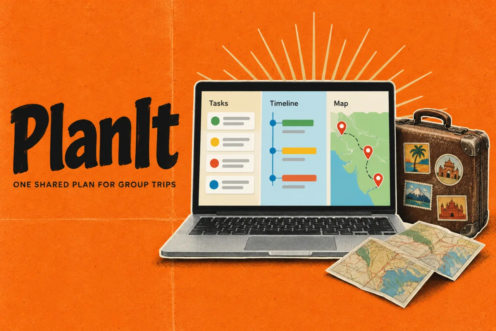

PlanItProduct story · 4 min read
A trip plan that leaves room for people.
A browser-based itinerary workspace for overlapping plans, different travellers, and different time zones.
Read the case study

The archived PlanIt interface. Ideas, scheduled commitments and location are treated as different views of a shared trip.
View full size ↗01 The problem
When should a loose idea become a scheduled commitment?
A group trip is not a single ordered checklist. Different people arrive at different times, attend parallel activities, and move between places. I approached PlanIt as several useful views of one plan, with a board for thinking and a time model for checking whether that plan can work.
Designed for Person coordinating a group trip. Turn possibilities into a plan while protecting confirmed times.
User context Design assumption
Combining people with different arrivals, activities, and commitments.
- The friction
- A single list hides overlaps and treats ideas as promises.
- Design implication
- Separate tentative cards from explicit scheduling.
Example situation · illustrative scenario. Imagine one person at a conference session, another arriving later, and a shared dinner across town. Put it all into one simple list and the useful differences disappear.
02 The direction
Ideas are not commitments
A board needs room for uncertainty. Scheduling should be an explicit decision, with existing commitments protected.
Product artifact · scheduling rules
My direction. I separated thinking on the board from committing to the schedule, with clear UX rules for what automation is allowed to change.
Process and product scope
I distinguished tentative ideas from scheduled commitments. The canvas supports exploration, while itinerary, timeline, map, and people views help the group understand the consequences of a plan.
The key interaction is the deliberate move from arrangement to schedule. Pins protect an existing commitment; loose ideas can stay undecided. The UX needs to explain what Resolve changes and make conflicts understandable.
- Shared
- plan across multiple views
- Explicit
- board-to-time action
- Local
- no account required
- Arrange
Use frames and connectors to express intent.
- Protect
Keep pinned times as commitments.
- Resolve
Translate the arrangement into a schedule deliberately.
- Explain
Make remaining conflicts visible to the planner.
03 The outcome
One plan, with room for different people.
I designed the board, itinerary, timeline, map and people views as different ways of working with the same trip. Scheduling is deliberate, pinned commitments stay protected, and conflicts remain visible. That behaviour is the part of PlanIt I would explain first to a new group.
More about the experience
- Several views, one plan. The working product carries the same trip across planning surfaces.
- An explicit contract. Pins, opt-in cards, and forward-only changes define the resolver.
04 Design decisions
Separate ideas from confirmed plans.
Open a decision to see the reasoning and trade-off.
01Give the board a clear but limited grammar
Day frames, ordering, and connectors convey meaning; loose cards can remain uncommitted ideas.
Why this matters. A planning surface needs room for uncertainty instead of assigning a date and time to everything immediately.
The trade-off. Spatial meaning must be taught. A frame or connector that looks decorative can otherwise change a plan unexpectedly.
02Make scheduling an intentional action
Tidy turns the existing itinerary into a board; Resolve reads the board back into the schedule.
Why this matters. A person should know when arrangement becomes a commitment. Automatic rearrangement would undermine the value of a free board.
The trade-off. Two explicit directions add a concept to learn, so the product needs visible feedback about what changed and why.
03Protect decisions the planner has already made
Pinned times win, untouched loose cards opt out, and resolution only moves times forward when constraints require it.
Why this matters. Automation should respect existing intent and explain an impossible plan rather than silently rewrite it.
The trade-off. A conservative resolver may leave conflicts unresolved. The interface must help the person decide what to relax.
05 Reflection
Useful automation makes its changes predictable.
I would try the planner with a late arrival, two parallel activities and a booking that cannot move. The useful test is whether people can predict what Resolve will change and spot a conflict before it becomes a problem on the trip.
What I would evaluate next proposed work
- plan a trip with parallel sessions, a pinned departure, and travellers in two zones; ask participants to predict Resolve before using it.
- unexpected schedule changes, correctly identified conflicts, and confidence explaining the final plan.
What is happening around this place?